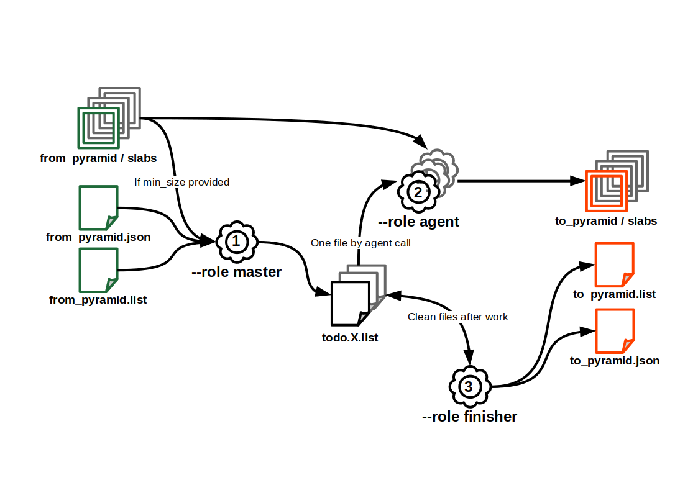

Outils ROK4 Python

Ce projet contient des outils de gestion des pyramides de données, écrits en Python.
- Installer les outils
- Utiliser les outils
- Compiler la suite d'outils
- Publier la suite d'outils sur Pypi
Installer les outils
Installations système requises :
- debian :
apt install python3-rados python3-gdal
Depuis PyPI : pip install rok4-tools
Depuis GitHub : pip install https://github.com/rok4/pytools/releases/download/1.2.1/rok4_tools-1.2.1-py3-none-any.whl
L'environnement d'exécution doit avoir accès aux librairies système. Dans le cas d'une utilisation au sein d'un environnement python, précisez bien à la création python3 -m venv --system-site-packages .venv.
Utiliser les outils
PYR2PYR
PYR2PYR est un outil de copie d'une pyramide d'un stockage à un autre. Il est possible de filtrer les dalles transférée en précisant une taille limite sous laquelle les données ne sont pas recopiées. La copie des dalles est parallélisable. Si des signatures MD5 sont présente dans le fichier liste, elles sont contrôlées après recopie.
Un exemple de configuration est affichable avec la commande pyr2pyr --role example et l'appel pyr2pyr --role check --conf conf.json permet de valider un fichier de configuration. Le fichier de configuration peut être un objet, auquel cas le chemin doit être préfixé par le type de stockage (exemple : s3://bucket/configuration.json)
Fonctionnement
Une copie complète d'une pyramide implique l'utilisation de l'outil avec les 3 modes suivants, dans cet ordre (tous les modes utilisent le fichier de configuration) :
- Rôle
master- Actions : génération des N TODO lists, déposé dans un dossier précisé dans la configuration (peut être un stockage objet).
- Appel :
pyr2pyr --role master --conf conf.json
- Rôle
agent:- Actions : lecture de la TODO list depuis le dossier de traitement et recopie des dalles
- Appel (un appel par TODO list) :
pyr2pyr --role agent --conf conf.json --split X
- Rôle
finisher:- Actions : lecture des TODO lists pour écrire le fichier liste final et écriture du descripteur de la pyramide en sortie.
- Appel :
pyr2pyr --role finisher --conf conf.json

Configuration
Possibilités de contenu du fichier JSON (généré à partir du schéma JSON avec jsonschema2md bin/pyr2pyr.schema.json /dev/stdout)
logger(object): Logger configuration.layout(string): Log format, according to logging python library. Default:%(asctime)s %(levelname)s: %(message)s.file(string): Path to log file. Standard output is used if not provided.level(string): Log level. Must be one of:['DEBUG', 'INFO', 'WARNING', 'ERROR', 'CRITICAL', 'NOTSET']. Default:WARNING.
from(object): Pyramid to copy.descriptor(string): Path to pyramid's descriptor to copy.
to(object): Pyramid to write.name(string): Output pyramid's name.storage(object)type(string): Storage type. Must be one of:['FILE', 'S3', 'CEPH'].root(string): Storage root : a directory for FILE storage, pool name for CEPH storage, bucket name for S3 storage.depth(integer): Tree depth, only for FILE storage. Minimum:1. Default:2.
process(object): Processing parameters.directory(string): Directory to write copies to process, FILE directory or S3/CEPH prefix.parallelization(integer): Parallelization level, number of todo lists and agents working at the same time. Minimum:1. Default:1.follow_links(boolean): Do we follow links (data slabs in others pyramids than the 'from' one). Default:False.slab_limit(integer): Minimum slab size (if under, we do not copy). Minimum:0. Default:0.
MAKE-LAYER
MAKE-LAYER est un outil générant un descripteur de couche compatible avec le serveur à partir des pyramides de données à utiliser
Utilisation : make-layer [-h] --pyramids storage://path/to/pyr.json[>BOTTOM>TOP] [storage://path/to/pyr.json[>BOTTOM>TOP] ...] --name my data [--styles normal [normal ...]] [--title my data]
Compiler la suite d'outils
apt install python3-venv
python3 -m venv .venv
source .venv/bin/activate
python3 -m pip install --upgrade build bump2version
bump2version --allow-dirty --current-version 0.0.0 --new-version 1.2.1 patch pyproject.toml src/rok4_tools/__init__.py
# Build artefacts
python3 -m build
Publier la suite d'outils sur Pypi
Configurer le fichier $HOME/.pypirc avec les accès à votre compte PyPI.
python3 -m pip install --upgrade twine
python3 -m twine upload --repository pypi dist/rok4_tools-1.2.1-py3-none-any.whl dist/rok4_tools-1.2.1.tar.gz